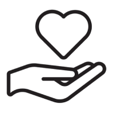
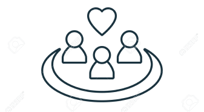

We gratefully accept a variety of donations
to support our cause, from gently used clothing to essential
household items. Your monetary contributions are deeply
appreciated and can be via the provided button.
If donation isn't possible for you, consider
volunteering with us to create a meaningful
impact!
Groundwork Living aims to offer a fresh start to those in need and desiring change. Our goal at Groundwork Living is to provide a solid foundation for living and growth. We provide temporary housing, counseling, job placement assistance, access to a community garden and kitchen, as well as clothing and hygiene necessities for individuals experiencing homelessness. Our focus lies in teaching individuals the essentials for leading a healthy life through a holistic approach.
|  |  | ||
|---|---|---|---|
| Compassion | Community | Hollistic Well-being | Education & Empowerment |
| Groundwork Living values the importance of community and connection, providing access to shared spaces like community gardens and kitchens to foster a sense of belonging and support. | Groundwork Living values the importance of community and connection, providing access to shared spaces like community gardens and kitchens to foster a sense of belonging and support. | Groundwork Living prioritizes holistic well-being through housing, counseling, job placement, and access to essential resources, acknowledging health as physical, mental, and emotional. | Groundwork Living values education and empowerment, focusing on teaching individuals essential life skills necessary for leading healthy and fulfilling lives. |
Deep appreciation goes out to our generous donors and steadfast supporters!